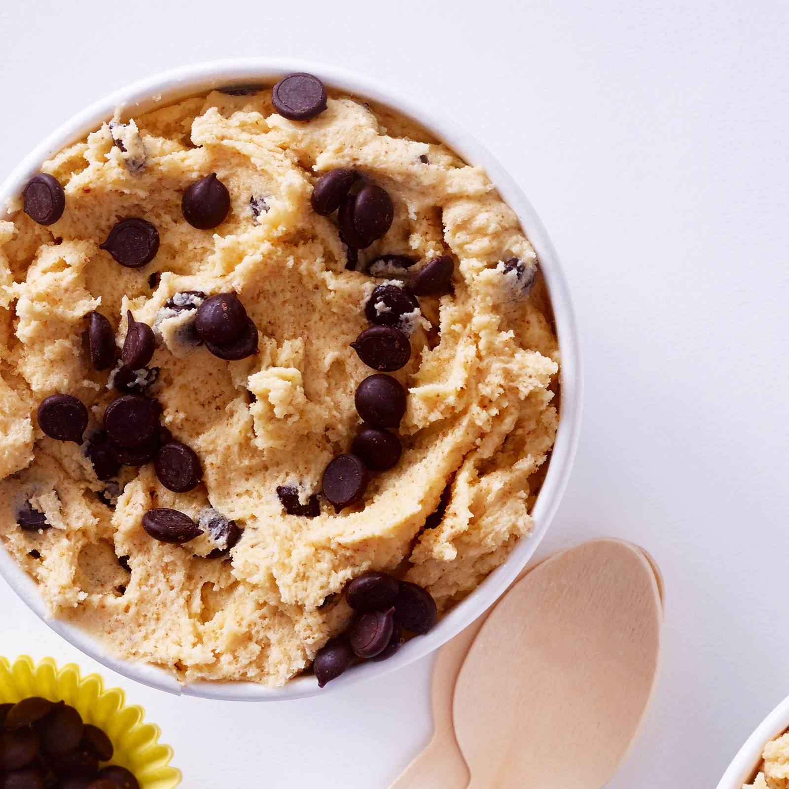

Lasagna

Relive your childhood with edible cookie dough!.
Blabla, I'm not a creative person.
You'll need the following ingredients to cook this recipe:
- 1 cup all-purpose flour
- 3⁄4 cup packed brown sugar
- 1⁄2 cup butter
- 1 teaspoon vanilla extract
- 1⁄2 teaspoon salt
- 2 tablespoons milk
- 1 1⁄2 cup milk chocolate chips
- 1⁄2 cup mini chocolate chips
Steps
- Gather all your ingredients.
- To heat-treat your flour so it is safe to use: Place flour in a microwave-safe dish and cook for 1 minute and 15 seconds, stirring it every 15 seconds. Set aside.
- Beat sugar and butter with an electric mixer in a large bowl until creamy. Beat in vanilla extract and salt. Add heat-treated flour; mix until a crumbly dough forms. Stir in milk until dough is just combined; fold in milk chocolate chips and mini chocolate chips.